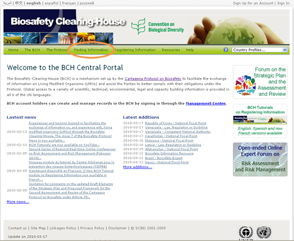
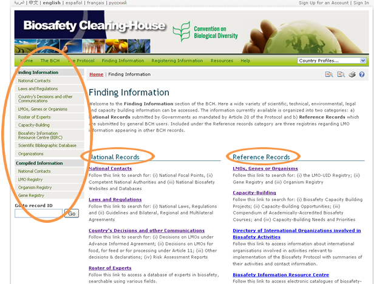

URL: http://bch.cbd.int/database/
EL CIISB queda establecido bajo el Artículo 20 para facilitar el intercambio de información en relación con los Organismos Vivos Modificados -OVM. Los requerimientos de los tipos de información son listados en éste Artículo y el CIISB mantiene bases de datos con la información pertinente. El acceso a esta información se provee a través de la página Búsqueda de Información del sitio web del CIISB, el cual puede encontrarse mediante un vínculo en la barra de navegación de la página de inicio del CIISB Bienvenido al Portal Central del CIISB.


Esta sección permite a los usuarios acceder a una amplia variedad de información científica, técnica, ambiental, jurídica y de creación de capacidad en las bases de datos del CIISB. Las categorías de información se listan en la página Búsqueda de Información.
La página principal de la sección Búsqueda de Información contiene un mensaje de bienvenida y una lista de la información disponible que está dividida en dos grupos. El grupo de la izquierda contiene las categorías de Registros Nacionales, los cuales son enviados por los Gobienrons de acuerdo a lo previsto en el artículo 20 del Protocolo. El grupo de la derecha contiene las categorías de Registros de Referencia, los cuales son enviados por usuarios generales registrados en el CIISB. Ambos grupos de información aparecen a su vez en la sección Búsqueda de Información en el menú de la izquierda. La sección Información Compilada del menú de la izquierda proporciona acceso a las listas y registros compilados.
Los siguientes capítulos proporcionan una guía general para el uso de las páginas de búsqueda, seguidas por un análisis específico de cada una de las categorías de información y cómo acceder a la información de cada una de las bases de datos.